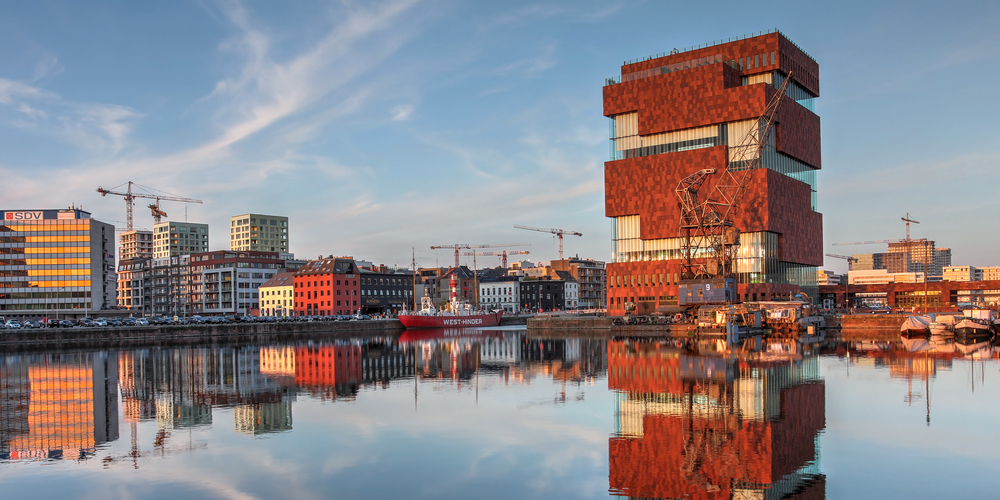

<ion-view noScroll>
  <ion-nav-title>
      Project: {{projectDetail.id}}
  </ion-nav-title>
  <ion-pane  class="has-footer">
          <td-cards>
              <td-card id="td-card" ng-repeat="card in cards" on-destroy="cardDestroyed($index)"
              on-swipe-left="cardSwipedLeft($index)" on-swipe-right="cardSwipedRight($index)"
              on-partial-swipe="cardPartialSwipe(amt)">
                  <div class="title">
                      {{card.title}}
                  </div>
                  <!--<div class="image">
                      <div class="no-text overlayBox"><div class="noBox boxed">Trash</div></div>
                      
                      <div class="yes-text overlayBox"><div class="yesBox boxed" id="centerMe">Save</div></div>
                  </div>-->
              </td-card>
          </td-cards>
      </ion-pane>
  <ion-footer-bar class="bar">
	<div class="button-bar">
    <button class="button button-full button-positive button-in-footer" ng-click="showSwipeTutorial()">
      Wat moet ik hier doen?
    </button>
	</div>
</ion-footer-bar>
</ion-view>
